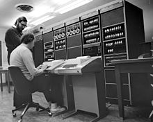
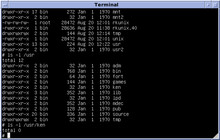

Kenneth Lane Thompson

February 4, 1943 - ?
Pioneer of Computer Science
Designer of UTF-8 | Computer Scientist | Creator of Unix
You can't trust code that you did not totally create yourself.
When in doubt, use brute force.
Life Timeline
1943
Kenneth Lane Thompson was born in New Orleans,
Lousiana in United States of America on February 4, 1943.
In his childhood, he was always fascinated with logic.
He worked on arithmetic problems in binary and similar things to that.
1965-1966

Kenneth receive a Bachelor of Science in 1965 and a Master's degree in 1966,
both in Electrical Engineering and Computer Science
from University of California, Berkeley.
1966-1969

Thompson was hired by Bell Labs. In the 1960s, Thompson and
Dennis Ritchie worked on the Multics operating system.
While writing Multics, he created the Bon programming language.
Later, Bell Labs discarded from the MULTICS project.
He also invented Thompson's construction algorithm used for converting regular expression
into nondeterministic finite automaton in order to make expression matching faster.
1970

Brian Kernighan suggested the name "Unix", in a pun on the name "Multics".
After initial work on Unix, Thompson
decided that Unix needed
a system programming language and created B, a precursor to Ritchie's C.
1971

Ken Thompson wrote a chess-playing program called
"chess" for the first version of Unix.
Later, along with Joseph Condon,
Thompson created the hardware-assisted program Belle,
a world champion chess computer.
1975

Thompson took a rest from Bell Labs and went to his alma mater, University of California Berkeley.
There, he helped to install Version 6 Unix on a PDP-11/70.
Unix at Berkeley would later become maintained as its own system,
known as the Berkeley Software Distribution (BSD).
1980s
Thompson and Ritchie continued revising Research Unix
Thompson was instrumental in the design and implementation of the Plan 9 from Bell Labs,
a new operating system utilizing principles of Unix,
but applying them more broadly to all major system facilities.
1992
Thompson developed the UTF-8 encoding scheme together with Rob Pike.
UTF-8 encoding has since become the dominant
character encoding for the World Wide Web,
accounting for more than 90% of all web pages in 2019.
2006-Present
Thompson retired from Bell Labs. He worked at Entrisphere, Inc. as a fellow until
2006 and now works at
Google as a Distinguished Engineer.
Recent work has included the co-design of the Go programming language.
In his personal life, Ken Thompson is married to Bonnie, and they have a son, Cory.